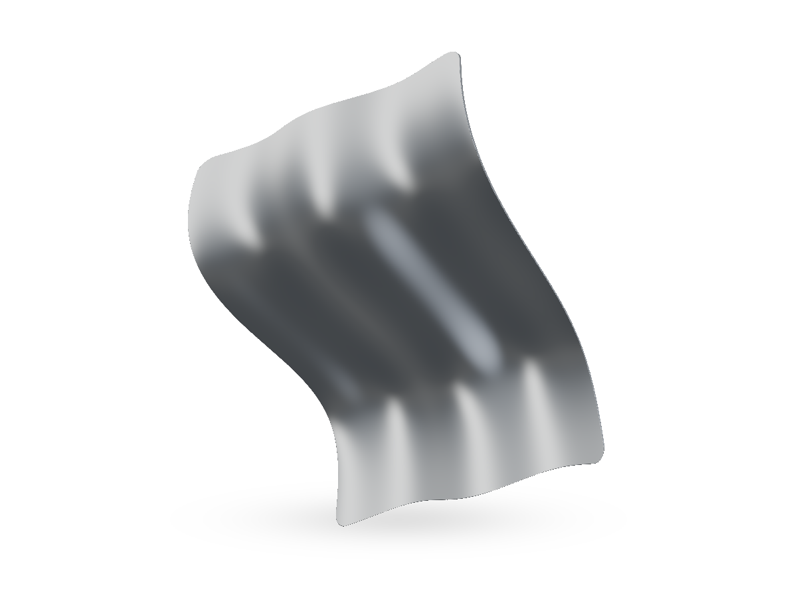
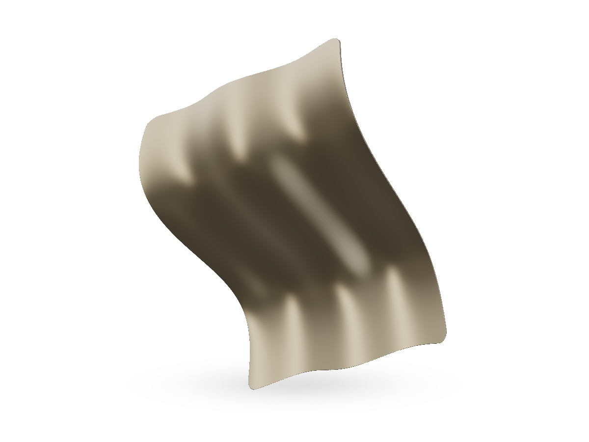

FOLD

Three finishes. One continuous surface.
Scroll to open the fold.
The study
From a fold
to an open sheet.
A broad bend runs across the sheet. Smaller folds catch the studio light along its length.
Scroll down to open the form, then return to see it close. The finish controls change the surface without changing the shape.

The materialLight follows
Light follows
the crease.
A champagne finish warms the same studio lighting. This close view shows how each bend changes the width of the reflection.
Look beneath the surfaceFinish comparison / 02Same form.
Same form.
Different light.
Slide between silver and champagne. Both views use the same shape and camera position.
ChampagneSilver
Take the study
into your next project.